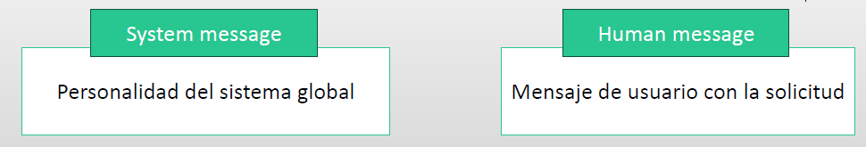

1. Introducción a LangChain#
En el ámbito de la inteligencia artificial y el desarrollo de aplicaciones basadas en modelos de lenguaje, LangChain se ha convertido en una de las herramientas más innovadoras y versátiles. Se trata de un framework diseñado para facilitar la integración de modelos de lenguaje de gran tamaño (LLMs, por sus siglas en inglés) en aplicaciones dinámicas e interactivas. Su objetivo principal es simplificar el desarrollo de flujos de trabajo complejos que combinan diferentes fuentes de datos, almacenamiento de memoria, ejecución de agentes y procesamiento estructurado de información.
Una de las características más destacadas de LangChain es su capacidad para conectar modelos de lenguaje con bases de datos, APIs y documentos externos, permitiendo a los desarrolladores crear aplicaciones avanzadas como asistentes conversacionales, motores de búsqueda mejorados, generación de código automático y automatización de tareas empresariales. Para lograrlo, LangChain proporciona módulos modulares y componibles que permiten personalizar y optimizar la interacción con los modelos de IA.
El framework se basa en cinco componentes clave:
Modelos de lenguaje: Integra modelos como OpenAI GPT, Hugging Face Transformers, Cohere y muchos más, facilitando su uso en diversas tareas de procesamiento del lenguaje natural.
Encadenamiento de procesos (Chains): Permite combinar múltiples pasos en una sola secuencia lógica para tareas más avanzadas.
Memoria: Proporciona almacenamiento de contexto en conversaciones para mejorar la coherencia y continuidad de las interacciones.
Recuperación y conexión con datos externos: Facilita el acceso a bases de datos, documentos y APIs para enriquecer las respuestas del modelo.
Agentes y herramientas: Permite el uso de modelos como agentes capaces de tomar decisiones y ejecutar acciones basadas en entradas dinámicas.
El uso de LangChain está revolucionando sectores como la automatización empresarial, la educación, el soporte al cliente y la investigación, ofreciendo soluciones más inteligentes y adaptadas a las necesidades del usuario. Su flexibilidad y capacidad de integración hacen de este framework una opción ideal para quienes buscan desarrollar aplicaciones de inteligencia artificial con capacidades conversacionales avanzadas y una gestión eficiente del conocimiento.
En conclusión, LangChain representa un avance significativo en la forma en que los modelos de lenguaje interactúan con entornos del mundo real. Su estructura modular, junto con su compatibilidad con diferentes fuentes de información, permite a los desarrolladores crear soluciones más sofisticadas e inteligentes, abriendo un abanico de posibilidades en el campo de la inteligencia artificial aplicada.
1.1. Apartados de Langchain.#
Langchain cuenta con cinco grandes bloques o apartados: Models, Prompts, indexes, memori, cahin y agentes:
Models: Indica la red neuronal que se va a uitilizar.
Promts: son los textos enviados al modelo. Pueden ser de diferentes tipos:
1.- Promt template: Son textos que sirven como guia del modelo
2.- chat promt template. Modelos para los chats
3.- promt value. Seria el texto completo ya formateado
4.- Example selector. Ayuda y genera mejor las respuestas.
Index. Para dar acceso a distinta fuentes de datos. Permite indexar un gran volumen de documentos. Pueden ser:
1.- Document Loader: abrir, cargar y procesar diferentes archivos.
2.- Text spliter: partir un documento en bloques más cortos
3.- Vector stores: Donde almacena los embedings
4.- Retrieves. Ayuda a traer información de algún documento específico
Memory: Dar memoria para por ejemplo los chats
cadenas/chain: Permitir unir modelos o cadenas entre sí
Agentes: Dar acceso a ciertas herramientas para solucionar mejor una determinada tarea
1.2. Cómo trabajar con LangChain en remoto#
Existen métodos de pagos con los que se puede trabajar en IA de forma remota. Nosotros y con el fin de que el lector pueda adquirir conocimientos sobre esta materia sin incurrir en ningún costo, hemos desarrollado la mayor parte de los apartados en forma local de manera que no se genere coste alguno.
No obstante para aquellos que quieran saber cómo proceder mediante alguno de los métodos de pago existente, se invita al lector a visitar este apartado.
1.3. Como trabajar con Google Colab.#
Google Colab es una buena herramienta computacional para realizar trabajos con LLM, en este apartado vamos a mostrar dos formas de poder trabajar este tipo de modelos.
1.- Descargando directamente el model de Hugging Face, como se muestra en este apartado, y se pude ver en este vídeo .
2.- Otra opción interesante es instalar en Colab *colab-xtera” y alli instalar ollama. La forma de proceder en este caso la puedes ver en este vídeo .
1.4. Cómo trabajar con LangChain en local.#
Para poder trabajar en local, sin necesidad de tener conexión con proveedor de pago, lo que vamos a hacer es trabajar con ollama, cuyo formato de uso lo puedes ver dentro de este trabajo y en concreto en este apartado, al que se invita a ir al lector si no conoce la materia. En adelante se presupone que el lector conoce esta herramienta para poder trabajar con modelos en local.
Una vez se tenga ese conocimiento, como inicio lo que vamos a crear una serie de solicitudes de entrada básicas para modelos y vamos a ver cómo gestionar los resultados que nos devuelven los LLM.
En esta sección nuestro interés se va a centrar en las funcionalidades básicas y la sintaxis que se necesita para hacer esto con LangChain.
El uso de Langchain y el componente Modelo IO nos permitirá construir cadenas más adelante, pero también nos dará más flexibilidad para cambiar de proveedor de LLM en el futuro , ya que la sintaxis está estandarizada en todos los LLM y solo cambian los parámetros o argumentos proporcionados.
Debemos tener en cuenta 2 parámetros importantes en las solicitudes a las APIs de los LLMs:

Para verificar cómo conectar a los diferentes LLMs integrados en Langchain, ver el siguiente enlace :
https://python.langchain.com/v0.2/docs/integrations/chat/
Procedemos a continuación a mostrar un ejemplo sobre la creación de un chat en local utilizando el modelo ue tenemos cargado en ollama y que se denomina ‘llama3.1’.
import langchain
from langchain_openai import ChatOpenAI
from langchain.schema import SystemMessage, HumanMessage
chat = ChatOpenAI(
model="llama3.2",
base_url = 'http://localhost:11434/v1',
api_key='ollama', # required, but unused,
)
resultado = chat.invoke([HumanMessage(content="¿Puedes decirme donde se encuentra cáceres?")])
resultado
Si queremos ver sólo el resultado buscado, debemos ejecutar la siguiente instrucción
resultado.content
Especificamos el SystemMessage para definir la personalidad que debe tomar el sistema
resultado = chat.invoke([SystemMessage(content='Eres un historiador que conoce los detalles de todas las ciudades del mundo'),
HumanMessage(content='¿Puedes decirme dónde se encuentra Cáceres')])
resultado.content
Se pueden obtener varios resultados invocando al chat de OpenAI con “generate”. Observar en este ejemplo la importancia que tiene el dar una información previa al modelo para indicar qué tipo de respuesta nos va a dar.
resultado = chat.generate(
[
[SystemMessage(content='Eres un historiador que conoce los detalles de todas las ciudades del mundo'),
HumanMessage(content='¿Puedes decirme dónde se encuentra Cáceres')],
[SystemMessage(content='Eres un joven rudo que no le gusta que le pregunten, solo quiere estar de fiesta'),
HumanMessage(content='¿Puedes decirme dónde se encuentra Cáceres')]
]
)
#Resultado con primer sistema
print(resultado.generations[0][0].text)
#Resultado con segundo sistema
print(resultado.generations[1][0].text)
1.5. Las plantillas (templates) en LangChain.#
Las plantillas nos permiten configurar y modificar fácilmente nuestras indicaciones de entrada para las llamadas de LLM. • Las plantillas ofrecen un enfoque más sistemático para pasar variables a solicitudes de modelos, en lugar de usar literales de cadena f o llamadas . format (), PromptTemplate las convierte en nombres de parámetros de función que podemos pasar. • Es recomendable usar plantillas para estandarizar los mensajes que enviamos a los LLMs para mayor flexibilidad y facilidad en futuros usos.
Veamos cómo utilizar estas plantillas en LangChain. Primero importamos las librerías:
from langchain.prompts import (
ChatPromptTemplate,
PromptTemplate,
SystemMessagePromptTemplate,
AIMessagePromptTemplate,
HumanMessagePromptTemplate,
)
from langchain.schema import (
AIMessage,
HumanMessage,
SystemMessage
)
Y después procedemeos a crear diferentes plantillas. Comenzamos con una plantilla para el sistema
#Creamos la plantilla del sistema (system_template)
system_template="Eres una IA especializada en coches de tipo {tipo_coches} y generar artículos que se leen en {tiempo_lectura}."
# Las variables las metemeos entre corchetes
system_message_prompt = SystemMessagePromptTemplate.from_template(system_template)
# Mostramos las variables que admite esta plantilla
system_message_prompt.input_variables
#De forma similar al procedimiento anterior, creamos la plantilla de usuario (human_template)
human_template="Necesito un artículo para vehículos con motor {peticion_tipo_motor}"
human_message_prompt = HumanMessagePromptTemplate.from_template(human_template)
# También mostramos las variables que admite
human_message_prompt.input_variables
#Creamos una plantilla de chat con la concatenación tanto de mensajes del sistema como del humano
chat_prompt = ChatPromptTemplate.from_messages([system_message_prompt, human_message_prompt])
# Los nombres de las variables, serán todas las definidas anteriormente
chat_prompt.input_variables
Una vez definida la plantilla, lo que nos queda es introducir los valores concretos que queremos tenga las variables definidas anteriormente
# Completar el chat gracias al formateo de los mensajes
chat_prompt.format_prompt(peticion_tipo_motor="híbrido enchufable", tiempo_lectura="10 min", tipo_coches="japoneses")
#Transformamos el objeto prompt a una lista de mensajes y lo guardamos en "solicitud_completa" que es lo que pasaremos al LLM finalmente
solicitud_completa = chat_prompt.format_prompt(peticion_tipo_motor="híbrido enchufable", tiempo_lectura="10 min", tipo_coches="japoneses").to_messages()
Con esto ya tenemos completada nuestra plantilla y lista para que pueda ser procesada pro el LLM con el que estemos trabajando
import langchain
from langchain_openai import ChatOpenAI
from langchain.schema import SystemMessage, HumanMessage
chat = ChatOpenAI(
model="llama3.2",
base_url = 'http://localhost:11434/v1',
api_key='ollama', # required, but unused,
)
result = chat.invoke(solicitud_completa)
result
result.content
1.6. Parsear y procesar la salida.#
A menudo, al conectar la salida de un LLM (modelo de lenguaje grande), necesitas que esté en un formato particular, por ejemplo, puedes querer un objeto datetime de Python o un objeto JSON.
LangChain viene con utilidades de análisis que te permiten convertir fácilmente las salidas en tipos de datos precisos gracias a los parseadores.
Los elementos claves de estos parseadores son los siguientes:
Método parse (): Método concreto para evaluar la cadena de texto string ) y parsearla al tipo deseado.
Format_instructions : Una cadena de texto extra que Langchain añade al final del prompt para asistir y facilitar la interpretación por el LLM del formato deseado.
Si no consigues el resultado parseado correctamente (por ejemplo, la respuesta del LLM es más extensa que únicamente una fecha que quieras parsear ), hay dos soluciones:
1.- Usar parseador Auto fix
2.- Usar un “ system prompt ” para dar mayor detalle al LLM de cómo debe actuar y responder.
Veamos algunos ejemplos prácticos para dejar más claro cómo se puede operar en LangChain con estos parseadores. Primero impostamos librerías necesarias e instanciamos un modelo de chat
import langchain
from langchain.prompts import PromptTemplate, SystemMessagePromptTemplate,ChatPromptTemplate, HumanMessagePromptTemplate
from langchain_openai import ChatOpenAI
chat = ChatOpenAI(
model="llama3.2",
base_url = 'http://localhost:11434/v1',
api_key='ollama', # required, but unused,
)
1.6.1. Parsear lista elementos separados por comas.#
Este puede ser el caso que necesitemos obtener una salida de los elementos que después sean procesados como un fichero de tipo csv.
from langchain.output_parsers import CommaSeparatedListOutputParser
output_parser = CommaSeparatedListOutputParser()
format_instructions = output_parser.get_format_instructions()
#Nos devuelve las instrucciones que va a pasar al LLM en función del parseador concreto
print(format_instructions)
# Como vemos es una instrucción que el parseador manda al LLM para obtener la lista separada por comas.
# Viene en ingles, pero funciona perfectamente si trabajamos en castellano
Vamos a ver un ejemplo imaginario. Suponemos que nos ha devuelto una serie de palabras, separadas por comas. Entonces vamos a ver como pasar eso a una lista que contenga las palabras anteriores que están separadas pro comas.
#Respuesta imaginaria
respuesta = "coche, árbol, carretera"
output_parser.parse(respuesta)
Veamos un ejemplo más concreto.
#Creamos la plantilla de usuario (human_template) con la concatenación de la variable "request" (la solicitud) y la variable "format_instructions" con
#las instrucciones adicionales que le pasaremos al LLM
human_template = '{request}\n{format_instructions}'
human_prompt = HumanMessagePromptTemplate.from_template(human_template)
#Creamos el prompt y le damos formato a las variables
chat_prompt = ChatPromptTemplate.from_messages([human_prompt])
chat_prompt.format_prompt(request="dime 5 características de los coches americanos",
format_instructions = output_parser.get_format_instructions()) #Las instrucciones son las que proporciona el propio parseador
#Transformamos el objeto prompt a una lista de mensajes y lo guardamos en "solicitud_completa" que es lo que pasaremos al LLM finalmente
solicitud_completa = chat_prompt.format_prompt(request="dime 5 características de los coches americanos",
format_instructions = output_parser.get_format_instructions()).to_messages()
result = chat.invoke(solicitud_completa)
result.content
# Convertir a la salida esperada
output_parser.parse(result.content)
1.6.2. Parseador en formato de fechas#
Veamos ahora cómo podemos parsear una fecha
from langchain.output_parsers import DatetimeOutputParser
output_parser = DatetimeOutputParser()
print(output_parser.get_format_instructions())
template_text = "{request}\n{format_instructions}"
human_prompt=HumanMessagePromptTemplate.from_template(template_text)
chat_prompt = ChatPromptTemplate.from_messages([human_prompt])
print(chat_prompt.format(request="¿Cuándo es el día de la declaración de independencia de los EEUU?",
format_instructions=output_parser.get_format_instructions()
))
solicitud_completa = chat_prompt.format_prompt(request="¿Cuándo es el día de la declaración de independencia de los EEUU?",
format_instructions=output_parser.get_format_instructions()
).to_messages()
result = chat.invoke(solicitud_completa)
result.content
output_parser.parse(result.content)
1.6.3. Métodos para solucionar problemas de parcheo.#
Hay ocasiones en las que no obtenemos la salida que nosotros queremos y existen algunas soluciones para dar solución a esos problemas.
1.6.3.1. Auto-Fix Parser.#
from langchain.output_parsers import OutputFixingParser
output_parser_dates = DatetimeOutputParser()
misformatted = result.content
misformatted
new_parser = OutputFixingParser.from_llm(parser=output_parser_dates, llm=chat)
new_parser.parse(misformatted)
1.6.3.2. System Promt#
system_prompt = SystemMessagePromptTemplate.from_template("Tienes que responder únicamente con un patrón de fechas")
template_text = "{request}\n{format_instructions}"
human_prompt=HumanMessagePromptTemplate.from_template(template_text)
chat_prompt = ChatPromptTemplate.from_messages([system_prompt,human_prompt])
print(chat_prompt.format(request="¿Cuándo es el día de la declaración de independencia de los EEUU?",
format_instructions=output_parser_dates.get_format_instructions()
))
solicitud_completa = chat_prompt.format_prompt(request="¿Cuándo es el día de la declaración de independencia de los EEUU?",
format_instructions=output_parser_dates.get_format_instructions()
).to_messages()
result = chat.invoke(solicitud_completa)
result.content
output_parser_dates.parse(result.content)
Podemos ver que al final con esta última herramienta hemos podido solucionar los errores de parseo que obteníamos anteriormente
1.7. Serialización de Prompts.#
En un capítulo anterior, hemos visto cómo poder trabajar con los denominados Pompts de LangChain. En ciertas ocasiones y bajo determinadas circunstancias, pudiera ocurrir que esos prompts lo queramos guardar, paro por ejemplo utilizarlos para futuros trabajos o compartir con otras personas. En esta sección, vamos a ver cómo podemos conseguir todo esto.
from langchain.prompts import PromptTemplate, SystemMessagePromptTemplate,ChatPromptTemplate, HumanMessagePromptTemplate
from langchain_openai import ChatOpenAI
Creamos la plantilla y la guardamos con la denominación “prompt.json”
plantilla = "Pregunta: {pregunta_usuario}\n\nRespuesta: Vamos a verlo paso a paso."
prompt = PromptTemplate(template=plantilla)
prompt.save("prompt.json")
Una vez hecho todo esto, posteriormente podremos cargar y utilizar de nuevo esa plantilla, de la siguiente manera:
from langchain.prompts import load_prompt
prompt_cargado = load_prompt('prompt.json')
prompt_cargado